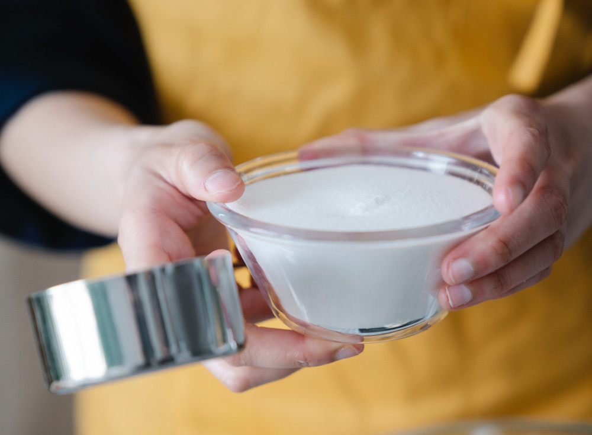

Massa madre: aprenda a fazer o fermento natural do pão
Quer aprender a fazer o pão como antigamente? Comece criando sua própria massa madre. Veja como abaixo:
Ingredientes
- 100 g farinha fina de centeio
- 3 x 200 g farinha de trigo
- 700 ml água a 30ºC
- Mel ou suco de fruta, de preferência frutos adocicados.
Modo de Preparo
-
DIA 0
Dissolva ½ colher (chá) de mel em 100 ml de água morna. Adicione 100 g de farinha de centeio e misture até formar uma pasta. Coloque em um recipiente e cubra com um pano (o recipiente não pode ser lacrado, apenas coberto para que a massa protegida porém em contato com o ambiente). Deixe fermentar por 24 h em temperatura ambiente, cerca de 25ºC. No começo da fermentação natural, existem apenas os microrganismos da farinha. Adicionando mel, suco de frutas ou especiarias facilitará a fermentação. Depois de 24h, a massa já apresentará alguns alvéolos de gás uma leve acidez. A água já está totalmente integrada à massa.
-
DIA 1
Cheque se a massa contém bolhas de ar. Se sim, a massa está pronta para ser alimentada e será chamada de “isca” ou levain chef. Será a primeira realimentação da massa: separe 200 g de isca, adicione 200 g de farinha de trigo e 200 ml de água morna (30°C) à massa. Misture tudo e tampe o recipiente, sem lacrar. Deixe fermentar por 24h à temperatura ambiente.
-
DIA 2
É hora de alimentar a massa novamente. É a segunda realimentação: separe 200 g de isca (a massa fermentada do dia anterior). Adicione 200 g de farinha de trigo e 200 ml de água morna (30°C) à massa. Misture tudo e tampe o recipiente, sem lacrar. Deixe fermentar por 24h à temperatura ambiente.
-
DIA 3
A massa aumenta de volume. É preciso continuar alimentando.
É a terceira realimentação: separe 200 g de isca (a massa fermentada do dia anterior), adicione 200 g de farinha de trigo e 200 ml de água morna (30°C) à massa. Misture tudo e tampe o recipiente, sem lacrar. Deixe fermentar por 24h à temperatura ambiente. As bactérias lácteas e as leveduras ainda não estão estáveis.
-
DIA 4
Não é mais necessário realimentar a massa, deixe apenas fermentar por mais 24h para checar se está esponjosa e aerada, o que demonstra ser capaz de fermentar uma massa de pão. O equilíbrio dos microrganismos na massa continua acontecendo. A seleção dos lactobacillus ainda vai acontecer. A parte importante é o equilíbrio entre os lactobacillus e as leveduras.
-
DIA 5
A isca de fermentação natural está pronta para ser utilizada na sua receita de pão ou pode ser realimentada para ser usada posteriormente.